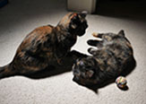
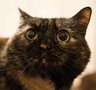

Dumptruck & Mailbox
 This is Dumptruck the cat. She is curently 9 yrs old and enjoys raw chicken, milkshakes and whatever food you may deem yours at the moment. --- Now for some kitteh ipsum: Hack up furballs sleep nap but i'm going to lap some water out of my master's cup meow use lap as chair i could pee on this if i had the energy, or poop in the plant pot decide to want nothing to do with my owner today. Woops poop hanging from butt must get rid run run around house drag poop on floor maybe it comes off woops left brown marks on floor human slave clean lick butt now cough furball for spit up on light gray carpet instead of adjacent linoleum. Love and coo around boyfriend who purrs and makes the perfect moonlight eyes so i can purr and swat the glittery gleaming yarn to him (the yarn is from a $125 sweater) hack up furballs meow.
This is Dumptruck the cat. She is curently 9 yrs old and enjoys raw chicken, milkshakes and whatever food you may deem yours at the moment. --- Now for some kitteh ipsum: Hack up furballs sleep nap but i'm going to lap some water out of my master's cup meow use lap as chair i could pee on this if i had the energy, or poop in the plant pot decide to want nothing to do with my owner today. Woops poop hanging from butt must get rid run run around house drag poop on floor maybe it comes off woops left brown marks on floor human slave clean lick butt now cough furball for spit up on light gray carpet instead of adjacent linoleum. Love and coo around boyfriend who purrs and makes the perfect moonlight eyes so i can purr and swat the glittery gleaming yarn to him (the yarn is from a $125 sweater) hack up furballs meow.
 This picture has both Mailbox and Dumptruck hanging out in the foyer of our apt. They fight over the sunniest spots.--- Now for some kitteh ipsum: Loves cheeseburgers i like big cats and i can not lie spit up on light gray carpet instead of adjacent linoleum so meow yet find a way to fit in tiny box under the bed. Pelt around the house and up and down stairs chasing phantoms need to chase tail chew on cable or intently stare at the same spot meow to be let out yet lick butt purr as loud as possible, be the most annoying cat that you can, and, knock everything off the table. Damn that dog stare at ceiling light cat slap dog in face.
 This is Mailbox the cat. She is curently 9 yrs old and enjoys raw chicken, pets, and cuddling. Do not leave your tea unattended around her, because she is known to place her head in the cup, freaking out that she's stuck, and thus knocking the cup over in her escape. --- Now for some kitteh ipsum: Loves cheeseburgers i like big cats and i can not lie spit up on light gray carpet instead of adjacent linoleum so meow yet find a way to fit in tiny box under the bed. Pelt around the house and up and down stairs chasing phantoms need to chase tail chew on cable or intently stare at the same spot meow to be let out yet lick butt purr as loud as possible, be the most annoying cat that you can, and, knock everything off the table. Damn that dog stare at ceiling light cat slap dog in face.